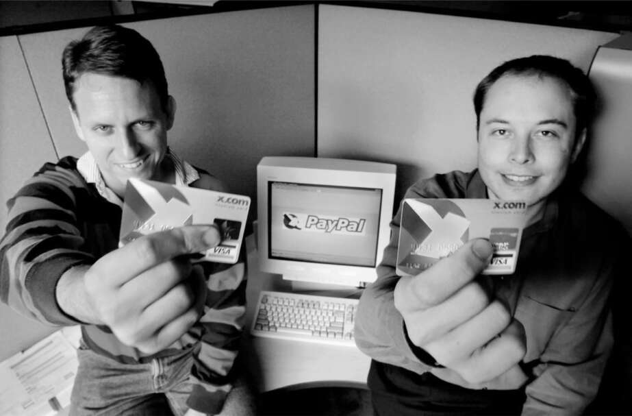

Một ngân hàng tất cả trong một
Khi người anh họ Peter Rive đến thăm vào đầu năm 1999, anh thấy Musk đang nghiền ngẫm những cuốn sách về hệ thống ngân hàng. "Tôi đang cố gắng suy nghĩ về việc nên bắt đầu điều gì tiếp theo", anh giải thích. Kinh nghiệm của anh tại Scotiabank đã thuyết phục anh rằng ngành này đã chín muồi cho sự đổi mới. Vì vậy, vào tháng 3 năm 1999, anh thành lập X.com với một người bạn từ ngân hàng, Harris Fricker.
Musk lúc này có sự lựa chọn mà anh đã mô tả với CNN: sống như một triệu phú hay đặt cược tất cả để tài trợ cho một doanh nghiệp mới. Sự cân bằng mà anh đạt được là đầu tư 12 triệu đô la vào X.com, để lại khoảng 4 triệu đô la sau thuế để chi tiêu cho bản thân.
Ý tưởng của anh cho X.com rất lớn. Nó sẽ là một cửa hàng đa năng cho tất cả các nhu cầu tài chính: ngân hàng, mua sắm kỹ thuật số, séc, thẻ tín dụng, đầu tư và vay vốn. Các giao dịch sẽ được xử lý ngay lập tức, không cần chờ đợi thanh toán. Nhận thức của anh là tiền chỉ đơn giản là một mục nhập trong cơ sở dữ liệu, và anh muốn nghĩ ra một cách để tất cả các giao dịch được ghi lại an toàn trong thời gian thực. "Nếu bạn khắc phục được tất cả những lý do khiến người tiêu dùng rút tiền khỏi hệ thống", anh nói, "thì đó sẽ là nơi chứa tất cả tiền, và điều đó sẽ biến nó thành một công ty trị giá hàng nghìn tỷ đô la."
Một số bạn bè của anh ấy tỏ ra nghi ngờ về việc một ngân hàng trực tuyến có thể tạo dựng niềm tin nếu sử dụng cái tên nghe như một trang web khiêu dâm. Nhưng Musk lại rất thích cái tên X.com. Thay vì quá cầu kỳ như Zip2, cái tên này đơn giản, dễ nhớ và dễ gõ. Nó cũng cho phép anh ấy sở hữu một trong những địa chỉ email ấn tượng nhất thời bấy giờ: e@x.com. "X" sau này trở thành ký tự ưa thích của anh để đặt tên cho mọi thứ, từ công ty đến con cái.
Phong cách quản lý của Musk không hề thay đổi so với thời Zip2, và cũng sẽ không bao giờ thay đổi. Việc anh ấy thường xuyên thức đêm lập trình rồi ban ngày lại cư xử thô lỗ và xa cách khiến Harris, người đồng sáng lập, cùng một số ít đồng nghiệp yêu cầu Musk từ chức CEO. Có lúc, Musk đã phản hồi bằng một email tự nhận thức rất rõ về bản thân. "Bản chất tôi là người cầu toàn,", anh viết thư cho Fricker. "Điều quan trọng với tôi là chiến thắng, và không phải là một chiến thắng nhỏ. Chúa mới biết tại sao... có lẽ nó bắt nguồn từ một lỗ đen tâm lý đáng lo ngại hoặc do mạch thần kinh bị chập."
Vì nắm giữ cổ phần chi phối, Musk đã thắng thế và Fricker nghỉ việc, cùng với hầu hết các nhân viên. Bất chấp tình hình hỗn loạn, Musk vẫn có thể thuyết phục Michael Moritz, người đứng đầu đầy ảnh hưởng của Sequoia Capital, đầu tư lớn vào X.com. Moritz sau đó đã tạo điều kiện cho một thỏa thuận hợp tác với Ngân hàng Barclay’s và một ngân hàng cộng đồng ở Colorado, để X.com có thể cung cấp quỹ tương hỗ, có giấy phép ngân hàng và được FDIC bảo hiểm. Ở tuổi hai mươi tám, Musk đã trở thành một người nổi tiếng trong giới khởi nghiệp. Trong một bài báo có tiêu đề "Elon Musk Sẵn Sàng Trở Thành Ngôi Sao Lớn Tiếp Theo Của Thung Lũng Silicon", Salon gọi anh là "người đàn ông nổi bật của Thung Lũng Silicon ngày nay".
Một trong những chiến thuật quản lý của Musk, từ trước đến nay, là đặt ra thời hạn gấp rút và thúc đẩy đồng nghiệp đáp ứng. Anh ấy đã làm điều đó vào mùa thu năm 1999 bằng cách thông báo, theo lời một kỹ sư là "một hành động khốn nạn", rằng X.com sẽ ra mắt công chúng vào cuối tuần Lễ Tạ Ơn. Trong những tuần trước đó, Musk đi lảng vảng trong văn phòng mỗi ngày, kể cả ngày Lễ Tạ Ơn, trong trạng thái căng thẳng và khiến mọi người cũng căng thẳng theo, và hầu hết các đêm anh đều ngủ dưới gầm bàn làm việc. Một trong những kỹ sư đã về nhà lúc 2 giờ sáng ngày Lễ Tạ Ơn nhận được cuộc gọi từ Musk lúc 11 giờ sáng yêu cầu anh quay lại vì một kỹ sư khác đã làm việc cả đêm và "không còn sung sức nữa". Hành vi như vậy gây ra nhiều tranh cãi và bất mãn, nhưng cũng mang lại thành công. Khi sản phẩm được ra mắt vào cuối tuần đó, tất cả nhân viên đã cùng nhau đến một máy ATM gần đó, nơi Musk đưa vào thẻ ghi nợ X.com. Tiền mặt ào ào tuôn ra và cả nhóm ăn mừng.
Tin rằng Musk cần người giám sát, Moritz đã thuyết phục anh ấy từ bỏ vị trí vào tháng sau và để Bill Harris, cựu giám đốc của Intuit, trở thành CEO. Giống như những gì đã xảy ra ở Zip2, Musk vẫn giữ chức giám đốc sản phẩm và chủ tịch hội đồng quản trị, duy trì cường độ làm việc điên cuồng của mình. Sau một cuộc họp với các nhà đầu tư, anh xuống căng tin, nơi anh đã lắp đặt một số máy chơi game điện tử. "Một vài người trong chúng tôi đã chơi Street Fighter với Elon", Roelof Botha, giám đốc tài chính, cho biết. "Anh ấy toát mồ hôi, và bạn có thể thấy anh ấy tràn đầy năng lượng và nhiệt huyết."
Musk đã phát triển các chiến lược tiếp thị lan truyền, bao gồm thưởng cho người dùng giới thiệu bạn bè, và ông có tầm nhìn biến X.com thành dịch vụ ngân hàng kiêm mạng xã hội. Giống Steve Jobs, ông đề cao sự đơn giản trong thiết kế giao diện người dùng. “Tôi đã tinh chỉnh giao diện để giảm thiểu số lần bấm phím cần thiết khi mở tài khoản”, ông chia sẻ. Ban đầu, người dùng phải điền vào các biểu mẫu dài, bao gồm cả số an sinh xã hội và địa chỉ nhà. “Tại sao chúng ta cần những thông tin này?”, Musk liên tục đặt câu hỏi. “Xóa đi!”. Một cải tiến nhỏ nhưng quan trọng là khách hàng không cần phải có tên người dùng; địa chỉ email của họ đã đảm nhiệm vai trò đó.
Một động lực tăng trưởng đến từ tính năng mà ban đầu họ cho là không mấy quan trọng: khả năng gửi tiền qua email. Tính năng này nhanh chóng trở nên phổ biến, đặc biệt trên trang đấu giá eBay, nơi người dùng đang tìm kiếm một cách dễ dàng để thanh toán cho người lạ khi mua hàng.
Khi Musk theo dõi danh sách khách hàng mới đăng ký, một cái tên đã thu hút sự chú ý của ông: Peter Thiel. Ông là một trong những người sáng lập của công ty Confinity, trước đây cùng tòa nhà với X.com và hiện chỉ cách đó một đoạn đường ngắn. Cả Thiel và người đồng sáng lập chính Max Levchin đều nhiệt huyết như Musk, nhưng họ kỷ luật hơn. Giống như X.com, công ty của họ cũng cung cấp dịch vụ thanh toán giữa các cá nhân. Phiên bản của Confinity được gọi là PayPal.
Đầu năm 2000, giữa những dấu hiệu đầu tiên cho thấy bong bóng internet có thể sắp vỡ, X.com và PayPal đã tham gia vào cuộc đua giành khách hàng mới. “Đó là một cuộc cạnh tranh điên cuồng, nơi cả hai chúng tôi đều đưa ra mức thưởng bằng đô la khổng lồ để thu hút khách hàng đăng ký và giới thiệu bạn bè”, Thiel nói. Như Musk sau này đã nói, “Đó là cuộc đua xem ai sẽ hết tiền sau cùng.”
Musk bị cuốn vào cuộc chiến với cường độ của một game thủ. Ngược lại, Thiel thích tính toán và giảm thiểu rủi ro một cách bình tĩnh. Cả hai sớm nhận ra rằng hiệu ứng mạng lưới - công ty nào lớn mạnh trước sẽ phát triển nhanh hơn - đồng nghĩa với việc chỉ một trong hai sẽ tồn tại. Vì vậy, việc sáp nhập sẽ hợp lý hơn là biến cuộc cạnh tranh thành trò chơi Mortal Kombat.
Musk và CEO mới Bill Harris đã lên lịch gặp Thiel và Levchin trong phòng riêng của Evvia, một nhà hàng Hy Lạp ở Palo Alto. Hai bên đã trao đổi thông tin về số lượng người dùng mà mỗi bên đang có, với Musk vẫn giữ thói quen phóng đại. Thiel hỏi ông hình dung các điều khoản sáp nhập tiềm năng như thế nào. “Chúng tôi sẽ sở hữu 90% công ty sau sáp nhập và các anh sẽ sở hữu 10%”, Musk trả lời. Levchin không chắc phải nghĩ gì về Musk. Liệu ông ta có nghiêm túc không? Cả hai công ty đều có lượng người dùng gần như tương đương. “Ông ta có vẻ mặt cực kỳ nghiêm túc, nhưng bên dưới dường như có chút mỉa mai”, Levchin nói. Như Musk sau này thừa nhận, “Chúng tôi đang chơi một trò chơi.”
Sau khi nhóm PayPal rời khỏi bữa trưa, Levchin nói với Thiel, “Điều này sẽ không bao giờ thành hiện thực, vì vậy hãy tiếp tục thôi.” Tuy nhiên, Thiel giỏi đọc vị người hơn. “Đây chỉ là lời mở đầu”, ông nói với Levchin. “Cậu chỉ cần kiên nhẫn với một người như Elon.”
Cuộc đàm phán tiếp tục diễn ra trong suốt tháng 1 năm 2000, khiến Musk phải hoãn tuần trăng mật với Justine. Michael Moritz, nhà đầu tư chính của X.com, đã sắp xếp một cuộc gặp giữa hai bên tại văn phòng của ông trên đường Sand Hill. Thiel đi cùng Musk trên chiếc McLaren của ông.
“Vậy, chiếc xe này có thể làm gì?”, Thiel hỏi.
“Xem này”, Musk đáp, chuyển sang làn đường nhanh và nhấn ga.
Trục sau gãy khiến chiếc xe xoay vòng, đâm vào bờ kè và bay lên không trung như một chiếc đĩa bay. Nhiều bộ phận xe vỡ vụn. Thiel, một người theo chủ nghĩa tự do, không thắt dây an toàn, nhưng lại thoát ra ngoài mà không hề hấn gì. Ông đã bắt xe đến văn phòng Sequoia. Musk, cũng không bị thương, ở lại nửa tiếng để xe được kéo đi, sau đó tham gia cuộc họp mà không nói với Harris chuyện gì đã xảy ra. Sau đó, Musk đã có thể cười và nói: "Ít nhất nó cho Peter thấy tôi không sợ rủi ro." Thiel nói: "Phải, tôi nhận ra anh ta hơi điên rồ."
Musk vẫn phản đối việc sáp nhập. Mặc dù cả hai công ty đều có khoảng 200.000 khách hàng đăng ký thanh toán điện tử trên eBay, ông tin rằng X.com là một công ty giá trị hơn vì nó cung cấp nhiều dịch vụ ngân hàng hơn. Điều đó khiến ông mâu thuẫn với Harris, người đã từng đe dọa sẽ từ chức nếu Musk cố gắng phá vỡ các cuộc đàm phán sáp nhập. "Nếu ông ấy nghỉ việc, đó sẽ là một thảm họa," Musk nói, "vì chúng tôi đang cố gắng huy động thêm tài chính ngay khi thị trường internet đang suy yếu."
Bước đột phá đến khi Musk có một trải nghiệm gắn kết với Thiel và Levchin trong một bữa trưa khác, lần này tại Il Fornaio, một nhà hàng Ý sang trọng ở Palo Alto. Họ đã đợi rất lâu mà không được phục vụ, vì vậy Harris xông vào bếp xem có thể lấy được món gì. Musk, Thiel và Levchin nhìn nhau và trao đổi ánh mắt. "Đây là kiểu người hướng ngoại cực đoan, làm việc trong lĩnh vực phát triển kinh doanh, hành động như thể anh ta có chữ S trên ngực, còn ba chúng tôi đều rất mọt sách," Levchin nói. "Chúng tôi gắn kết với nhau vì là kiểu người sẽ không bao giờ làm những gì Bill đã làm."
Họ đã đồng ý sáp nhập, trong đó X.com sẽ nhận được 55% công ty sau sáp nhập, nhưng Musk gần như đã phá hỏng mọi thứ ngay sau đó bằng cách nói với Levchin rằng anh ta đang được một món hời. Tức giận, Levchin đe dọa sẽ rút lui. Harris lái xe đến nhà anh ta và giúp anh ta gấp quần áo khi anh ta bình tĩnh lại. Các điều khoản đã được sửa đổi một lần nữa, về cơ bản là sáp nhập 50-50, nhưng với X.com là pháp nhân tồn tại. Vào tháng 3 năm 2000, thỏa thuận đã được hoàn tất và Musk, cổ đông lớn nhất, trở thành chủ tịch. Vài tuần sau, ông cùng với Levchin buộc Harris rời đi và giành lại vai trò CEO. Sự giám sát của người lớn tuổi không còn được chào đón nữa.
Các hệ thống thanh toán điện tử của cả hai công ty đã được hợp nhất và tiếp thị dưới thương hiệu PayPal. Điều đó đã trở thành sản phẩm chính của công ty và nó tiếp tục phát triển nhanh chóng. Nhưng tạo ra các sản phẩm thích hợp không phải là bản chất của Musk. Ông muốn làm lại toàn bộ ngành công nghiệp. Vì vậy, ông tập trung lại vào mục tiêu ban đầu của mình là tạo ra một mạng xã hội sẽ phá vỡ toàn bộ ngành ngân hàng. "Chúng ta phải quyết định xem liệu chúng ta có nhắm đến mục tiêu lớn hay không," ông nói với đội ngũ của mình. Một số người tin rằng cách nhìn nhận của Musk là sai lầm. "Chúng tôi đã có rất nhiều lực kéo trên eBay," Reid Hoffman, một nhân viên ban đầu, người sau này đồng sáng lập LinkedIn, cho biết. "Max và Peter nghĩ rằng chúng tôi nên tập trung hoàn toàn vào điều đó và trở thành một dịch vụ bán hàng bậc thầy."
Musk khăng khăng tên công ty phải là X.com, còn PayPal chỉ là một thương hiệu con. Ông thậm chí còn cố gắng đổi tên hệ thống thanh toán thành X-PayPal. Điều này vấp phải nhiều phản đối, đặc biệt là từ Levchin. PayPal đã trở thành một thương hiệu đáng tin cậy, như một người bạn tốt giúp bạn nhận tiền. Ngược lại, các nhóm khảo sát cho thấy cái tên X.com gợi lên hình ảnh một trang web mờ ám mà người ta không muốn nhắc đến. Nhưng Musk vẫn kiên quyết, và cho đến nay vẫn vậy. "Nếu bạn chỉ muốn là một hệ thống thanh toán nhỏ lẻ, PayPal là cái tên tốt hơn," ông nói. "Nhưng nếu bạn muốn chiếm lĩnh hệ thống tài chính toàn cầu, thì X mới là cái tên phù hợp."
Musk và Michael Moritz đến New York để xem liệu họ có thể mời Rudy Giuliani, người vừa kết thúc nhiệm kỳ thị trưởng, làm cố vấn chính trị và hướng dẫn họ vượt qua những khó khăn về chính sách của việc trở thành một ngân hàng hay không. Nhưng ngay khi bước vào văn phòng của ông, họ biết rằng điều đó sẽ không hiệu quả. "Cứ như bước vào một cảnh phim xã hội đen vậy," Moritz nói. "Ông ta bị bao vây bởi những người thân tín trông rất đáng ngờ. Ông ta chẳng hiểu gì về Thung lũng Silicon, nhưng ông ta và đám tay chân lại rất háo hức kiếm chác." Họ yêu cầu 10% cổ phần công ty, và đó là kết thúc của cuộc gặp. "Người này sống ở một hành tinh khác," Musk nói với Moritz.
Musk tái cấu trúc công ty sao cho không còn bộ phận kỹ thuật riêng biệt. Thay vào đó, các kỹ sư sẽ hợp tác với các quản lý sản phẩm. Đó là triết lý mà ông sẽ áp dụng cho Tesla, SpaceX, và sau đó là Twitter. Tách biệt việc thiết kế sản phẩm khỏi kỹ thuật là một công thức dẫn đến sự rối loạn. Các nhà thiết kế phải cảm nhận được ngay lập tức khó khăn nếu thứ họ nghĩ ra khó thực hiện về mặt kỹ thuật. Ông cũng có một hệ quả hoạt động tốt với tên lửa nhưng lại kém hiệu quả hơn với Twitter: các kỹ sư chứ không phải quản lý sản phẩm nên dẫn dắt nhóm.
Peter Thiel dần rút khỏi việc tham gia tích cực vào công ty, để lại người đồng sáng lập Confinity, Max Levchin, một phù thủy phần mềm người Ukraina trầm tính và cực kỳ sắc sảo, làm giám đốc công nghệ và đối trọng với Musk. Levchin và Musk sớm xung đột về một vấn đề nghe có vẻ kỹ thuật nhưng cũng mang tính nguyên tắc: nên sử dụng Microsoft Windows hay Unix làm hệ điều hành chính. Musk ngưỡng mộ Bill Gates, yêu thích Windows NT và nghĩ rằng Microsoft sẽ là một đối tác đáng tin cậy hơn. Levchin và nhóm của ông kinh hãi, cảm thấy Windows NT không an toàn, nhiều lỗi và không hợp thời. Họ thích sử dụng các biến thể khác nhau của hệ điều hành giống Unix, bao gồm Solaris và Linux mã nguồn mở.
Một đêm khuya, Levchin đang làm việc một mình trong phòng họp thì Musk bước vào, sẵn sàng tiếp tục tranh luận. "Cuối cùng cậu sẽ thấy tôi đúng," Musk nói. "Tôi biết bộ phim này sẽ kết thúc như thế nào."
"Không, anh sai rồi," Levchin trả lời bằng giọng đều đều. "Nó sẽ không hoạt động trên Microsoft."
"Cậu biết gì không," Musk nói. "Tôi sẽ vật tay với cậu để quyết định."
Levchin nghĩ, đúng vậy, rằng đây là cách ngu ngốc nhất có thể tưởng tượng được để giải quyết một bất đồng về mã phần mềm. Thêm vào đó, Musk gần như gấp đôi kích thước của anh ta. Nhưng vì làm việc muộn nên anh ta đã đồng ý vật tay. Anh ta dồn hết sức lực vào đó và nhanh chóng thua cuộc. "Để nói rõ," Levchin nói với anh ta, "Tôi sẽ không sử dụng sức mạnh thể chất của anh như một yếu tố đầu vào cho quyết định kỹ thuật."
Musk cười và nói: "Được rồi, tôi hiểu." Nhưng ông ấy vẫn quyết định làm theo ý mình. Ông ấy dành cả năm trời để đội ngũ kỹ sư riêng của mình viết lại mã Unix mà Levchin đã viết cho Confinity. “Chúng tôi đã lãng phí cả năm trời cho việc 'múa rìu qua mắt thợ' này thay vì phát triển các tính năng mới,” Levchin nói. Việc viết lại mã cũng khiến công ty không thể tập trung vào vấn nạn lừa đảo ngày càng gia tăng đang hoành hành dịch vụ. “Lý do duy nhất chúng tôi vẫn thành công là vì không có công ty nào khác được rót vốn trong thời gian đó.”
Levchin không biết phải nghĩ gì về Musk. Liệu màn đấu trí của ông ta có nghiêm túc không? Những cơn bùng nổ dữ dội xen lẫn sự hài hước ngớ ngẩn và trò chơi tâm lý của ông ta là tính toán hay điên rồ? “Mọi thứ ông ấy làm đều có sự mỉa mai,” Levchin nói. “Ông ấy vận hành trên một 'cài đặt mỉa mai' luôn ở mức từ bốn đến mười một, không bao giờ thấp hơn.” Một trong những năng lực của Musk là lôi kéo người khác vào vòng tròn mỉa mai của mình để họ có thể cùng chia sẻ một trò đùa riêng. “Ông ấy bật 'súng phun lửa mỉa mai' của mình lên và tạo ra cảm giác như một câu lạc bộ Elon độc quyền.”
Điều đó không hiệu quả với Levchin, người được bảo vệ khỏi 'súng phun lửa mỉa mai' bởi sự nghiêm túc của mình. Anh ta có khả năng nhận biết sự phóng đại của Musk rất tốt. Trong quá trình sáp nhập, Musk liên tục khẳng định rằng X.com có số lượng người dùng gần gấp đôi, và Levchin sẽ kiểm tra với các kỹ sư của mình để có được con số thực. “Elon không chỉ phóng đại, mà còn bịa đặt,” Levchin nói. Đó là những gì cha anh ta đã làm.
Tuy nhiên, Levchin bắt đầu kinh ngạc trước những trường hợp ngược lại, chẳng hạn như khi Musk khiến anh ta ngạc nhiên bởi kiến thức của mình. Có lần Levchin và các kỹ sư của anh đang vật lộn với một vấn đề khó khăn liên quan đến cơ sở dữ liệu Oracle mà họ đang sử dụng. Musk thò đầu vào phòng và, mặc dù chuyên môn của ông ấy là Windows chứ không phải Oracle, nhưng ngay lập tức ông ấy đã hiểu được bối cảnh của cuộc trò chuyện, đưa ra một câu trả lời chính xác và mang tính kỹ thuật, rồi bước ra ngoài mà không cần chờ xác nhận. Levchin và nhóm của anh quay lại với tài liệu hướng dẫn Oracle của họ và tra cứu những gì Musk đã mô tả. “Lần lượt từng người chúng tôi đều nói, 'Chết tiệt, ông ấy đúng,'” Levchin nhớ lại. “Elon sẽ nói những điều điên rồ, nhưng thỉnh thoảng, ông ấy sẽ làm bạn ngạc nhiên bằng cách biết nhiều hơn bạn về chính chuyên môn của bạn. Tôi nghĩ một phần lớn trong cách ông ấy thúc đẩy mọi người là những màn thể hiện sự sắc sảo này, điều mà mọi người không ngờ tới từ ông ấy, bởi vì họ nhầm ông ấy với một kẻ ba hoa hay một gò hề.”

Với người đồng sáng lập PayPal Peter Thiel